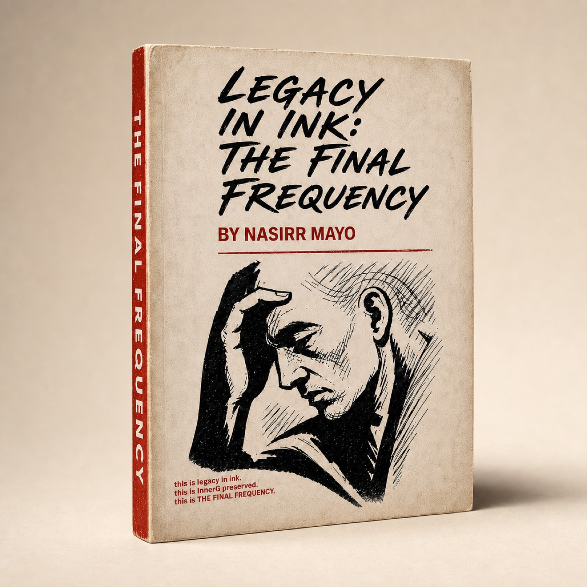

Release 001 / Available now
Legacy In Ink:
The Final Frequency
This is not just poetry. It is pattern recognition, survival language, and a field guide for breaking inherited loops.
Each verse begins with the words, then opens into the principle, the pattern being exposed, and questions that ask the reader to recognize where the lesson already lives in their own life.
- 16 original verses
- 176 interior pages
- 01 first edition note
Choose where to purchase